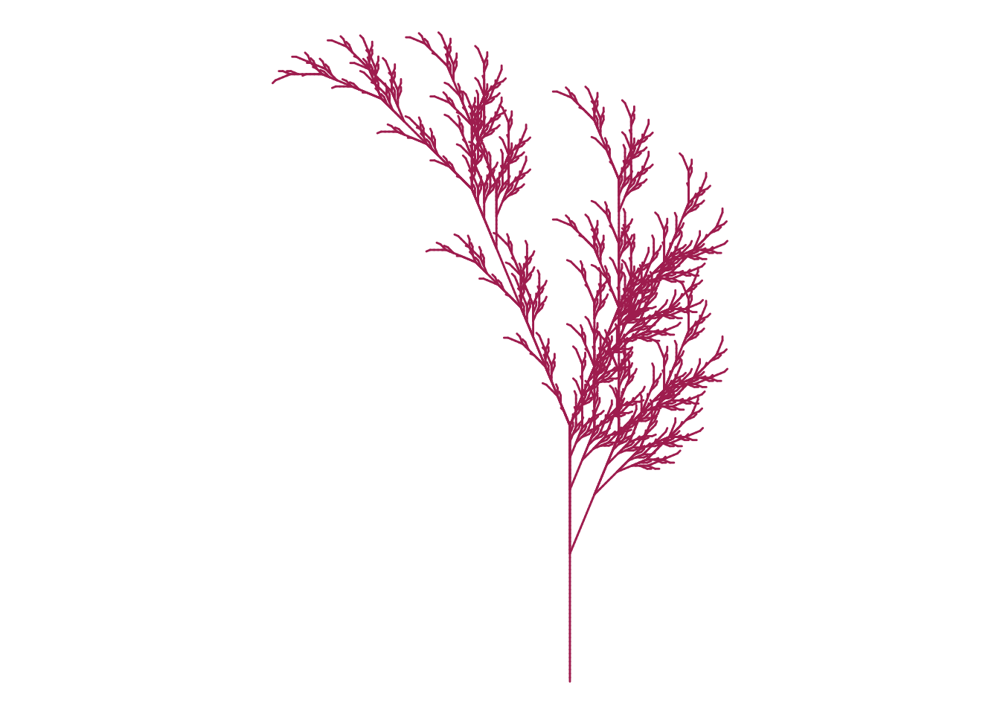

options(repos = c(CRAN = "https://cran.rstudio.com/"))
library(gsubfn)Loading required package: protolibrary(tidyverse)── Attaching core tidyverse packages ──────────────────────── tidyverse 2.0.0 ──
✔ dplyr 1.1.4 ✔ readr 2.1.5
✔ forcats 1.0.0 ✔ stringr 1.5.1
✔ ggplot2 3.5.1 ✔ tibble 3.2.1
✔ lubridate 1.9.3 ✔ tidyr 1.3.1
✔ purrr 1.0.2 ── Conflicts ────────────────────────────────────────── tidyverse_conflicts() ──
✖ dplyr::filter() masks stats::filter()
✖ dplyr::lag() masks stats::lag()
ℹ Use the conflicted package (<http://conflicted.r-lib.org/>) to force all conflicts to become errorsaxiom="X"
rules=list("X"="F-[[X]+X]+F[+FX]-X", "F"="FF")
angle=22.5
depth=6
for (i in 1:depth) axiom=gsubfn(".", rules, axiom)
actions=str_extract_all(axiom, "\\d*\\+|\\d*\\-|F|L|R|\\[|\\]|\\|") %>% unlist
status=data.frame(x=numeric(1), y=numeric(1), alfa=numeric(1))
points=data.frame(x1 = 0, y1 = 0, x2 = NA, y2 = NA, alfa=90, depth=1)
for (action in actions)
{
if (action=="F")
{
x=points[1, "x1"]+cos(points[1, "alfa"]*(pi/180))
y=points[1, "y1"]+sin(points[1, "alfa"]*(pi/180))
points[1,"x2"]=x
points[1,"y2"]=y
data.frame(x1 = x, y1 = y, x2 = NA, y2 = NA,
alfa=points[1, "alfa"],
depth=points[1,"depth"]) %>% rbind(points)->points
}
if (action %in% c("+", "-")){
alfa=points[1, "alfa"]
points[1, "alfa"]=eval(parse(text=paste0("alfa",action, angle)))
}
if(action=="["){
data.frame(x=points[1, "x1"], y=points[1, "y1"], alfa=points[1, "alfa"]) %>%
rbind(status) -> status
points[1, "depth"]=points[1, "depth"]+1
}
if(action=="]"){
depth=points[1, "depth"]
points[-1,]->points
data.frame(x1=status[1, "x"], y1=status[1, "y"], x2=NA, y2=NA,
alfa=status[1, "alfa"],
depth=depth-1) %>%
rbind(points) -> points
status[-1,]->status
}
}
ggplot() +
geom_segment(aes(x = x1, y = y1, xend = x2, yend = y2),
lineend = "round",
color="maroon",
data=na.omit(points)) +
coord_fixed(ratio = 1) +
theme_void() 